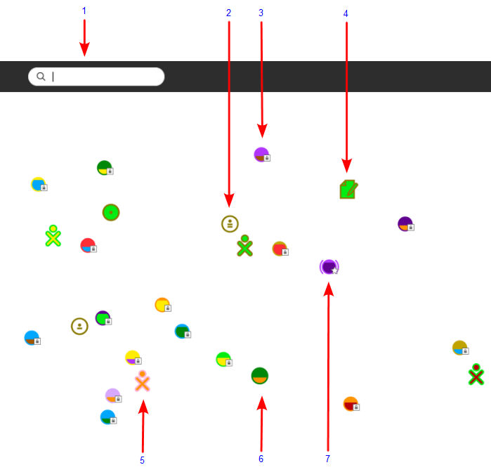

Neighborhood View¶
Neighborhood View: Connecting to the Internet¶
You can use the Neighborhood View to connect to the Internet and to collaborate with others.
To see the Neighborhood View, click the Neighborhood icon on the Frame. You can also use the Neighborhood button for this purpose if your keyboard has one, or press the F1 key.
Neighborhood Elements¶

Search menu: You can find find people, Activities, or access points (what connects you to the Internet) using the search menu.
Ad-Hoc network icon: An ad-hoc network lets you connect to other computers without using an access point.
Access point: WiFi hot spots (Internet access points) appear as circles in the Neighborhood view. If you hover over a circle, the name of the network appears. Each circle has another color inside, the more full the inside color, the better the connection. To connect to a network, click the circle, and then click Connect. If the circle shows a lock symbol, expect to enter a key or password. The inside of the circle blinks while your system tries to connect. Once you are connected, an icon for the connection will appear at bottom right of the Frame. To disconnect, hover over the circle, and choose Disconnect on the menu. Or hover over the icon in the Frame, and choose Disconnect there. (OLPC XO-1 Note: The XO-1 laptop has three mesh network channels. By clicking on a mesh icon, then clicking on Connect, you join that particular mesh network, and disconnect from an Access point network. The other XO icons shown will change according to who is on that network.)
Shared Activities: Shared Activities appear as icons in the Neighborhood View and you can join them by clicking the corresponding icon.
XO icon: Other Sugar users appear as XO icons. By hovering over them, you can discover the nickname of that person and can add them as a friend or invite them to join you in a shared Activity.
Open access point: An access point which isn’t protected by a password. The network behind the access point may still have a password.
Connected networks: Once the computer has connected to a network, two arcs are drawn either side of the icon.